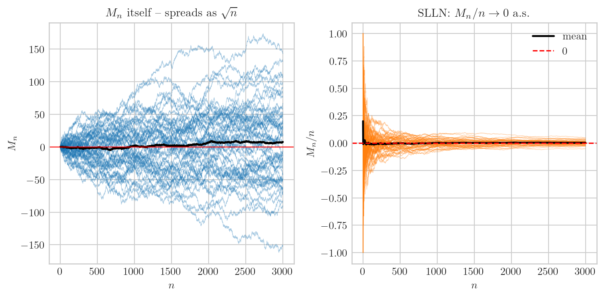
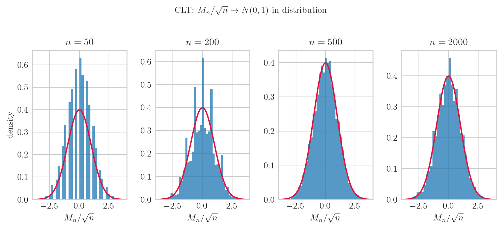
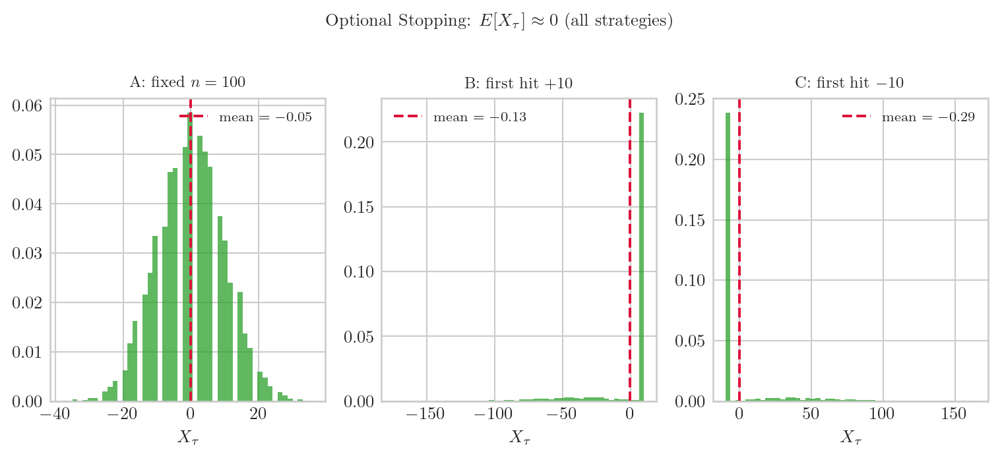
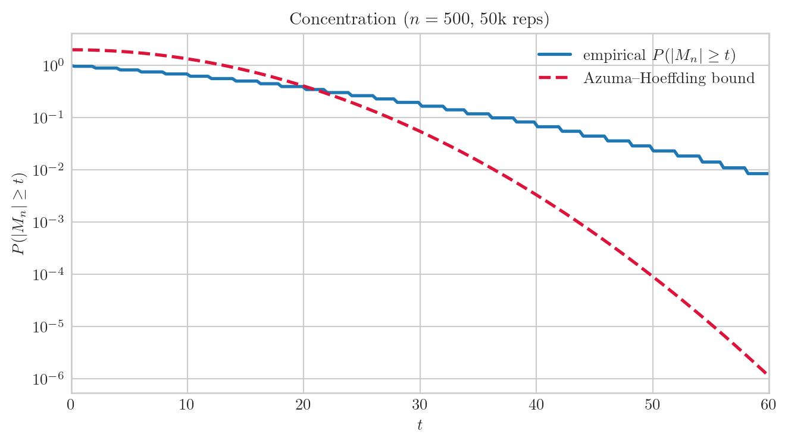

import numpy as np
import matplotlib.pyplot as plt
plt.style.use("seaborn-v0_8-whitegrid")
plt.rcParams.update({
"text.usetex": True,
"text.latex.preamble": r"\usepackage{amsmath,amssymb}",
"font.family": "serif",
"font.size": 10,
"axes.titlesize": 11,
"axes.labelsize": 10,
})
rng = np.random.default_rng(20260522)
NPATH = 50책공부 ▷ HST ▷ 마팅게일이 살아남으면 — SLLN, CLT, Optional Stopping, Concentration
(스튜디오. 화이트보드 하나, 노트북 하나. 호스트 H 와 게스트 G 가 마주 앉아 있다. 오늘 주제는 마팅게일이 살아남으면 어떤 일이 일어나는가.)
H. 지난 글에서 마팅게일이 뭔지 봤잖아요 — \(E[X_{n+1} \mid \mathcal F_n] = X_n\), 공정한 게임. 오늘은 그 조건 하나가 살아 있을 때 따라오는 네 가지 결과를 보려고 해요. SLLN, CLT, optional stopping, concentration.
G. 전부 다 마팅게일 하나에서 나오는 건가요?
H. 네, 전부 \(E[X_{n+1} \mid \mathcal F_n] = X_n\) 단 하나에서. 공통 설정 먼저 짤게요.
에피소드 1: SLLN — 나눠도 나눠도 0 으로
H. 첫 번째. bounded increment martingale \(\{M_n\}\), \(|\Delta M_k| \leq c\) 라 하면 \(M_n / n \to 0\) a.s. 이게 마팅게일 SLLN (Durrett 4.5.3, 상세: 260522_210331.html).
G. \(M_n\) 자체는 커지는데 \(n\) 으로 나누면 0 이 된다는 거죠?
H. 맞아요. \(M_n \sim \sqrt{n}\) 규모로 흩어지지만, \(n\) 으로 나누면 \(1/\sqrt{n} \to 0\). fair walk 으로 직접 볼게요.
T = 3000
t = np.arange(1, T + 1)
eps = rng.choice([-1.0, 1.0], size=(NPATH, T))
M = np.cumsum(eps, axis=1)
ratio = M / t[None, :]
ratio[:3, -1] # M_T / T — 0 근처 확인array([ 0.036, 0.014, -0.014])ratio[:, -1].mean(), ratio[:, -1].std() # ensemble 끝값: 평균 ≈ 0, std 작아짐(np.float64(0.0025866666666666664), np.float64(0.020708190542767263))fig, axes = plt.subplots(1, 2, figsize=(8, 4))
for k in range(NPATH):
axes[0].plot(t, M[k], lw=0.4, alpha=0.4, color="C0")
axes[0].plot(t, M.mean(0), lw=1.8, color="k"); axes[0].axhline(0, color="r", lw=0.8)
axes[0].set_title(r"$M_n$ itself -- spreads as $\sqrt{n}$")
axes[0].set_xlabel(r"$n$"); axes[0].set_ylabel(r"$M_n$")
for k in range(NPATH):
axes[1].plot(t, ratio[k], lw=0.4, alpha=0.4, color="C1")
axes[1].plot(t, ratio.mean(0), lw=1.8, color="k", label=r"mean")
axes[1].axhline(0, color="r", lw=1.2, ls="--", label=r"0")
axes[1].set_title(r"SLLN: $M_n/n \to 0$ a.s.")
axes[1].set_xlabel(r"$n$"); axes[1].set_ylabel(r"$M_n / n$"); axes[1].legend()
plt.tight_layout(); plt.show()
G. 왼쪽은 퍼지는데 오른쪽은 0 으로 모이네요.
H. 정확해요. HST 에서 height 잔차 \(M_t^{(i)} / t \to 0\) — Theorem C Step 1 의 핵심이 바로 이 그림이에요.
에피소드 2: CLT — \(\sqrt{n}\) 으로 정규화하면 정규분포
H. 두 번째는 더 정밀한 질문이에요. \(M_n / n \to 0\) 은 알겠는데, 그럼 \(M_n\) 이 정확히 얼마나 크게 자라느냐. 답은 정확히 \(\sqrt{n}\), 그리고 \(M_n / \sqrt{n}\) 의 분포가 \(N(0,1)\) 로 수렴해요.
G. 마팅게일 CLT네요. \(n\) 이 커질수록 히스토그램이 정규분포 모양으로?
H. 직접 볼게요. 5000개 iid 복제본을 여러 \(n\) 에서 히스토그램으로.
eps2 = rng.choice([-1.0, 1.0], size=(5000, 2000))
M2 = np.cumsum(eps2, axis=1)
n_vals = [50, 200, 500, 2000]
for nv in n_vals:
s = M2[:, nv-1] / np.sqrt(nv)
print(f"n={nv:5d}: mean={s.mean():+.4f} std={s.std():.4f} (theory: 0, 1)")n= 50: mean=-0.0127 std=1.0139 (theory: 0, 1)
n= 200: mean=+0.0140 std=1.0164 (theory: 0, 1)
n= 500: mean=+0.0124 std=1.0030 (theory: 0, 1)
n= 2000: mean=+0.0127 std=0.9977 (theory: 0, 1)fig, axes = plt.subplots(1, 4, figsize=(8, 3.5))
x = np.linspace(-4, 4, 300)
normal = np.exp(-x**2 / 2) / np.sqrt(2 * np.pi)
for ax, nv in zip(axes, n_vals):
s = M2[:, nv-1] / np.sqrt(nv)
ax.hist(s, bins=40, density=True, alpha=0.75, color="C0", edgecolor="none")
ax.plot(x, normal, lw=1.5, color="crimson")
ax.set_title(r"$n=" + str(nv) + r"$"); ax.set_xlabel(r"$M_n/\sqrt{n}$"); ax.set_xlim(-4, 4)
axes[0].set_ylabel("density")
fig.suptitle(r"CLT: $M_n/\sqrt{n} \to N(0,1)$ in distribution", fontsize=10, y=1.02)
plt.tight_layout(); plt.show()
G. \(n=50\) 도 이미 꽤 닮았는데요.
H. 맞아요. CLT 수렴이 꽤 빨라요. SLLN 이 “\(1/n\) 배 나누면 0”이었다면, CLT 는 “정확히 \(1/\sqrt{n}\) 배가 자연스러운 스케일, 그 스케일에서 분포가 \(N(0,1)\)” 라는 거예요.
에피소드 3: Optional Stopping — 언제 멈춰도 평균은 그대로
H. 세 번째가 제일 직관에 반하는 결과예요. 공정한 게임에서 어떤 전략으로 멈춰도 평균 손익은 0. Doob 의 optional stopping theorem.
G. 전략을 잘 짜면 이길 수 있지 않아요?
H. 그게 안 된다는 거예요. \(E[X_\tau] = E[X_0]\) — 멈추는 시점 \(\tau\) 가 어떤 stopping time 이어도. 세 가지 전략 비교해 볼게요.
N_rep, T_stop = 10000, 2000
eps3 = rng.choice([-1.0, 1.0], size=(N_rep, T_stop))
X3 = np.cumsum(eps3, axis=1) # fair walk, X_0 = 0
# 전략 A: 고정 시점 n=100
X_A = X3[:, 99]
# 전략 B: 처음으로 +10 이상 (이기면 멈추는 전략)
hit_B = (X3 >= 10)
tau_B = np.where(hit_B.any(1), hit_B.argmax(1), T_stop - 1)
X_B = X3[np.arange(N_rep), tau_B]
# 전략 C: 처음으로 -10 이하 (잘리면 멈추는 전략)
hit_C = (X3 <= -10)
tau_C = np.where(hit_C.any(1), hit_C.argmax(1), T_stop - 1)
X_C = X3[np.arange(N_rep), tau_C]
print(f"E[X_τ] 전략 A (고정 n=100): {X_A.mean():+.4f} (theory: 0)")
print(f"E[X_τ] 전략 B (첫 +10 도달): {X_B.mean():+.4f} (theory: 0)")
print(f"E[X_τ] 전략 C (첫 -10 도달): {X_C.mean():+.4f} (theory: 0)")E[X_τ] 전략 A (고정 n=100): -0.0504 (theory: 0)
E[X_τ] 전략 B (첫 +10 도달): -0.1346 (theory: 0)
E[X_τ] 전략 C (첫 -10 도달): -0.2894 (theory: 0)fig, axes = plt.subplots(1, 3, figsize=(8, 3.5))
for ax, vals, label in zip(axes,
[X_A, X_B, X_C],
["A: fixed $n=100$", "B: first hit $+10$", "C: first hit $-10$"]):
ax.hist(vals, bins=50, density=True, alpha=0.75, color="C2", edgecolor="none")
ax.axvline(vals.mean(), color="crimson", lw=1.5, ls="--",
label=rf"mean $={vals.mean():.2f}$")
ax.set_title(label, fontsize=9); ax.set_xlabel(r"$X_\tau$"); ax.legend(fontsize=8)
fig.suptitle(r"Optional Stopping: $E[X_\tau] \approx 0$ (all strategies)", fontsize=10, y=1.02)
plt.tight_layout(); plt.show()
G. 전략 B 는 이길 때만 멈추는 건데도 평균이 0 이에요?
H. 이길 때만 멈추면 대신 도달 못 하는 경우도 있어요 — 그 경우엔 손실이 남아요. 두 효과가 정확히 상쇄돼서 평균 0. 카지노에서 “배가 되면 나간다” 전략이 이론적으로 이득이 없는 이유예요.
에피소드 4: Concentration — 평균에서 얼마나 벗어날 수 있는가
H. 마지막. SLLN, CLT 는 수렴 얘기였고, concentration 은 편차의 크기에 대한 얘기예요. Azuma–Hoeffding:
\[P(|M_n - M_0| \geq t) \;\leq\; 2\exp\!\Bigl(-\frac{2t^2}{\sum_{k=1}^n c_k^2}\Bigr)\]
\(c_k = 1\) (fair walk) 이면 \(P(|M_n| \geq t) \leq 2e^{-2t^2/n}\).
G. 편차가 \(t\) 이상일 확률이 이중 지수로 감소한다는 거죠?
H. 맞아요. 특히 \(t = O(\sqrt{n})\) 으로 잡으면 확률이 \(e^{-O(1)}\) 수준이고, \(t = O(n)\) 으로 잡으면 \(e^{-O(n)}\) — 지수적으로 희귀해져요. 이론 상한 vs 실제 경험 확률을 비교해 볼게요.
n_conc = 500
M5 = np.cumsum(rng.choice([-1.0, 1.0], size=(50000, n_conc)), axis=1)[:, -1]
t_vals = np.linspace(0, 60, 200)
emp = np.array([np.mean(np.abs(M5) >= tv) for tv in t_vals])
azuma = 2 * np.exp(-2 * t_vals**2 / n_conc)
# 이론값 vs 경험값 비교 (몇 가지 t 에서)
for tv in [10, 20, 30, 40]:
emp_v = np.mean(np.abs(M5) >= tv)
az_v = 2 * np.exp(-2 * tv**2 / n_conc)
print(f"t={tv:2d}: empirical={emp_v:.6f} Azuma={az_v:.6f} ratio={emp_v/az_v:.3f}")t=10: empirical=0.688340 Azuma=1.340640 ratio=0.513
t=20: empirical=0.394820 Azuma=0.403793 ratio=0.978
t=30: empirical=0.196400 Azuma=0.054647 ratio=3.594
t=40: empirical=0.082840 Azuma=0.003323 ratio=24.928fig, ax = plt.subplots(figsize=(7, 4))
ax.plot(t_vals, emp, lw=2.0, color="C0", label=r"empirical $P(|M_n| \geq t)$")
ax.plot(t_vals, azuma, lw=2.0, ls="--", color="crimson",
label=r"Azuma--Hoeffding bound")
ax.set_yscale("log"); ax.set_xlim(0, 60)
ax.set_title(rf"Concentration ($n={n_conc}$, 50k reps)")
ax.set_xlabel(r"$t$"); ax.set_ylabel(r"$P(|M_n| \geq t)$"); ax.legend()
plt.tight_layout(); plt.show()
G. 경험 확률이 항상 Azuma 상한 아래네요.
H. bound 가 tight 하진 않지만 올바른 스케일 (\(e^{-t^2/n}\)) 을 잡아요. log scale 에서 두 곡선 모두 직선처럼 보이는 건 이중 지수 감소의 표식이에요. HST 에서 height 잔차의 tail 을 잡을 때 이 부등식이 배경에서 작동하고, 랜덤 알고리즘의 편차 한도 분석 (e.g. 머신러닝에서 generalization bound) 의 핵심 도구이기도 해요.
H. 정리해 볼게요. \(E[X_{n+1} \mid \mathcal F_n] = X_n\) 단 하나에서 네 가지가 따라왔어요.
G. SLLN — ratio 는 0, CLT — \(\sqrt{n}\) 스케일에서 정규, optional stopping — 전략 무관 평균 고정, concentration — tail 이 이중 지수 감소.
H. 이게 마팅게일이 그냥 귀여운 정의가 아니라 수학의 핵심 도구인 이유예요. 공정성 하나만 지키면 이 모든 것이 따라온다.